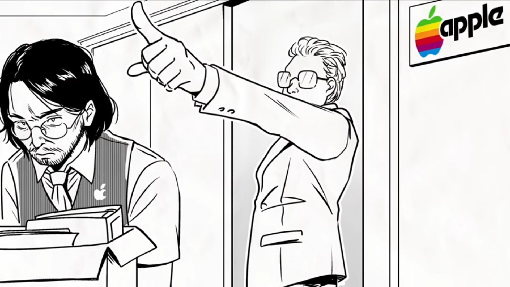

La Obsesion de Jobs
Repasemos 1997 Apple despidió o mejor dicho lo echaron a Steve Jobs este enojado creo otra empresa llamada NEXT, pero esta no tendría tanta relevancia hasta que se creo su sistema operativo, Apple al ver esto decidió comprar NEXT y recontratar a Jobs, pero este aun recordaba como lo trataron, pero no hay nada que no pueda ser perdonado por unos 429 millones de dólares puso su mano en corazón y decidió reingresar a Apple. |  | |
6 de mayo de 1998 Jobs revela la primera computadora traslucida toda una computadora en un monitor el primer iMac había nacido pero era solo un caballo de troya y a partir de su segunda generación estos tendrían puertos Firewire esto serviría para conectar otros dispositivos que Apple mismo estaba creando y en los que se enfocaban esto era una videocámara pero esto cambiaria rápidamente. Al principio de los 2000’s estaba reinando el mp3 llego a tal punto que la cantidad de discos vacíos para reproducir mp3 habían sobrepasado la población de estados unidos y Steve se dio cuenta de su error el futuro no eran las video cámaras si no los mp3, y rápido quiso comprar a la mejor compañía que tuviera el mejor dispositivo mp3 y aquí ingresaría el Rio PMP300 este era un dispositivo para reproducir la música sacada de discos no importa si era original o no, y unos exempleados de Apple crearon un programa para vincular el PMP300 con la Mac y Apple compraría esta y la volvería lo que hoy conocemos como ITunes. |
||
Cuando se compró este software un ingeniero que se perdió su nombre entre la historia sugirió en una junta y “ Y si hacemos una máquina que archivos mp3” a Jobs le encanto esta idea tanto que llego a obsesionarse y le exigió a su jefe de ingeniería Jon Rubinstein que le hiciera un dispositivo que reprodujera archivos mp3, lo que sucedería en ese año es una serie de coincidencias o solo estar en el momento exacto y lugar exacto Jon en uno de sus viajes a Japón visito a Toshiba de rutina y estos mismos dijeron que habían encontrado la manera de que un disco duro sea pequeño y demasiado pero estos no sabían qué hacer con este proyecto, Jon corrió hacia Jobs y en menos de 1 día Jobs hizo un trato con Toshiba por 10 millones de dólares, aún faltaba un ingeniero en jefe para el proyecto y justo Jon había escuchado de una cierta persona que intentaban tener la misma idea , Este seria Tony Fadell, trabajaba para Philips pero a estos no les interesaba los archivos MP3 renuncio a este y creo su propia empresa llamada Fuse pero no tuvo éxito y estaba a punto de entrar a la quiebra pero en un cierto viaje para despejar su mente recibe una llamada de Apple. |
Al ver sus ideas casi idénticas este acepto la propuesta de Apple y empezó como líder de proyecto pero pronto se arrepentiría un poco ya que Jobs quería que lo
terminaran ese mismo año listo para las fiestas navideñas, Tony busco a un tercero que ayudara con la producción y diseño de esta y les llevo a comprar una compañía
Portal Player , estos ya tenían un prototipo trabajado anterior mente y solo tuvieron que adecuarlo, algo curioso el reproductor funcionaba con ARM y solo podían
desarrollar herramientas con un sistema Windows así es Apple corriendo y confiando en un sistema operativo rival.
Abril del 2001 Tony se presenta ante una junta y dice su visión del reproductor mp3 y en una sola reunión acordaron todo,
Tony asombrado por el tipo de reuniones en philips esto demoraría meses tal vez años y solo faltaba el diseño justo el director de marketing Phil Schiller saco de
su bolsillo Bang&Olufsen BeoCom 6000 un celular con una rueda de navegación y todos les pareció una buena idea el reproductor tendría esta rueda de navegación. El
Prototipo había nacido. |